Yang Liu
Email: liuy856@mail.sysu.edu.cn
Office: School of Computer Science and Engineering, Sun Yat-sen University, Guangzhou, China
Curriculum Vitae
I am currently a research associate professor at HCP Lab, School of Computer Science and Engineering, Sun Yat-sen University, working with Prof. Liang Lin. From 2019-2021, I worked as a posdoctoral fellow at School of Computer Science and Engineering, Sun Yat-sen University. I obtained my Ph.D degree of Telecommunications and Information Systems in June 2019 at Phoenix-eye (XD145) Lab, School of Telecommunications Engineering, Xidian University, advised by Prof. Zhaoyang Lu, Prof. Jing Li and Prof. Tao Yang. I received my B.S. degree in telecommunications engineering, School of Information Engineering, Chang’an University in 2014. I serve as the reviewer of CVPR, ICCV, AAAI, ECCV, IEEE T-PAMI, IEEE T-IP, T-NNLS, IEEE T-MM, IEEE T-CSVT, IEEE SPL, PR, and NSFC, etc.
- Computer Vision: Cross-modal Semantic Reasoning, Robust and Efficient Spatial-temporal Representation Learning
- Machine Learning: Causal Relation Discovery, Transfer Learning
- Urban Computing: Anomaly Detection, Traffic Flow Prediction, Traffic Signal Control
- Guangdong Basic and Applied Basic Research Foundation, ¥ 100K, 2023-2026, PI
- Science and Technology Projects in Guangzhou, ¥ 50K, 2022-2024, PI
- National Key Research and Development Program of China, ¥ 5,000K, 2021-2025, Key Participant
- National Natural Science Foundation of China, ¥ 300K, 2021-2024, PI
- Guangdong Basic and Applied Basic Research Foundation, ¥ 100K, 2021-2024, PI
- General Program of China Postdoctoral Science Foundation, ¥ 80K, 2020-2022, PI
- Fundamental Research Funds for the Central Universities, ¥ 120K, 2020-2022, PI
- National Scholarship for PhD Students, 2018.
- Excellent PhD Students, 2018.
- National English Competition, Third Prize, 2013.
- National Mathematical Modeling Competition, Second Prize, 2012.
News
- 2022-12: One review paper about causal reasoning is reported in social media by Machine Intelligence Research.
- 2022-11: I received the funding from Guangdong Basic and Applied Basic Research Foundation 2023.
- 2022-11: One review paper for causal reasoning is published online by Machine Intelligence Research.
- 2022-11: I am invited as the Program Committee (PC) Member for the Computational Visual Media Conference 2023.
- 2022-11: I am invited as the reviewer of IEEE/CVF Conference on Computer Vision and Pattern Recognition 2023.
- 2022-09: I become a member of IEEE Industrial Electronics Society.
- 2022-08: My TCGL paper published in IEEE T-IP is invited to be exhibited as the poster in Valse 2022.
- 2022-08: One review paper about causal reasoning is accepted by Machine Intelligence Research.
- 2022-08: I am invited as the Program Committee (PC) Member for the AAAI 2023.
- 2022-06: I become a member of CSIG.
- 2022-05: One paper is accepted by IEEE Transactions on Industrial Informatics.
- 2022-04: I received the funding from Science and Technology Projects in Guangzhou.
- 2022-03: One paper is accepted by CVPR 2022 as an oral presentation.
- 2022-01: One paper is accepted by IEEE Transactions on Image Processing. Code is available.
- 2022-01: One paper is accepted by ICASSP 2022.
- 2022-01: The code for TCGL is available.
- 2021-12: I am invited as the reviewer of Chinese Conference on Pattern Recognition and Computer Vision (PRCV) 2022.
- 2021-11: I am invited as the reviewer of IEEE/CVF Conference on Computer Vision and Pattern Recognition 2022.
- 2021-10: I start working as a research associate professor at Sun-Yat-Sen University.
- 2021-05: One paper is accepted by IEEE Transactions on Image Processing. Code is available.
- 2021-04: The code for SAKDN is available.
- 2021-02: I become a Member of the IEEE.
- 2020-12: I am invitied as the reviewing expert for NSFC.
- 2020-11: I received the funding from National Natural Science Foundation of Guangdong Province of China 2021.
- 2020-09: I received the funding from National Natural Science Foundation of China 2021.
- 2020-06: I received the funding from China Postdoctoral Science Foundation 2020.
- 2020-03: I received the funding from Fundamental Research of the Central Universities 2020.
- 2020-01: My Ph.D Thesis (psw：ithd) is available now.
- 2019-10: Codes and datasets for IEEE TIP is available.
- 2019-10: One paper is accepted by IEEE Transactions on Image Processing.
- 2019-08: I start working as a postdoctoral fellow at Sun-Yat-Sen University.
- 2019-06: I obtain my Ph.D degree from Xidian University.
Selected Publications (See Full List in Google Scholar)
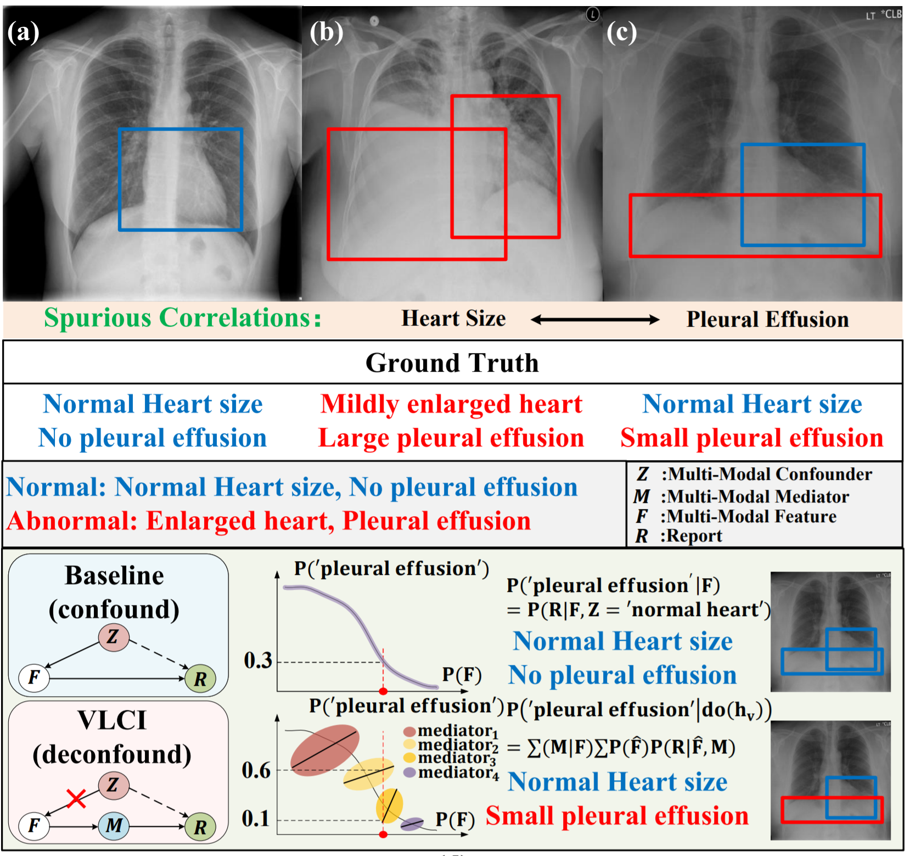
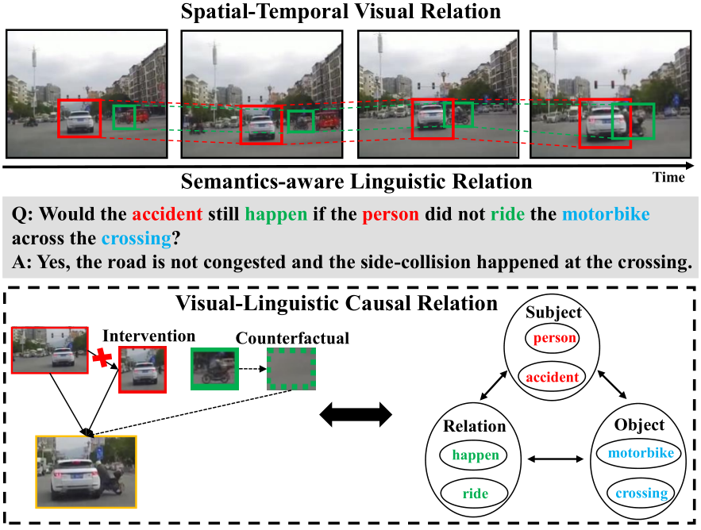
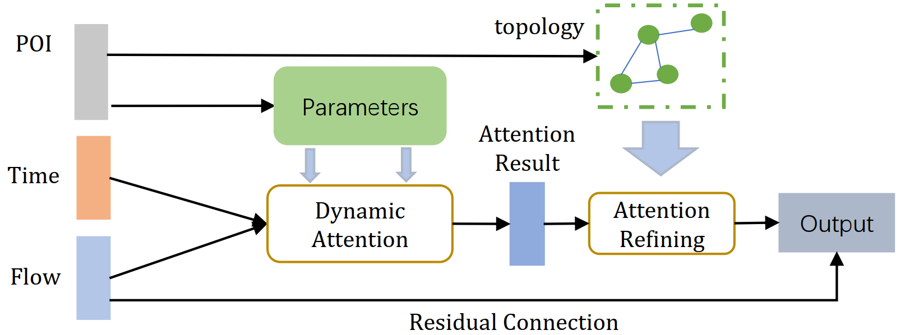
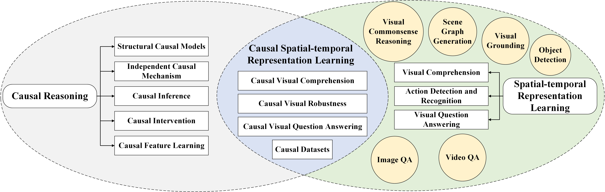
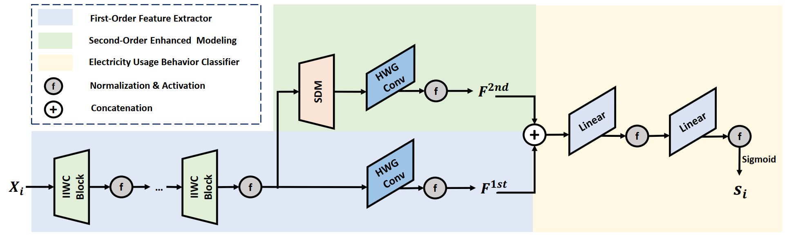
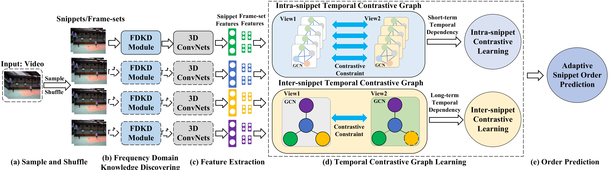
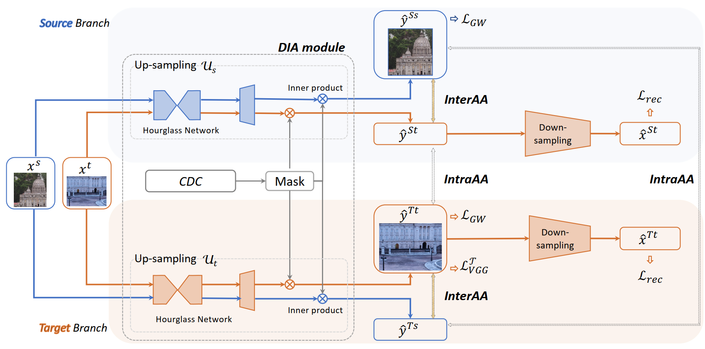
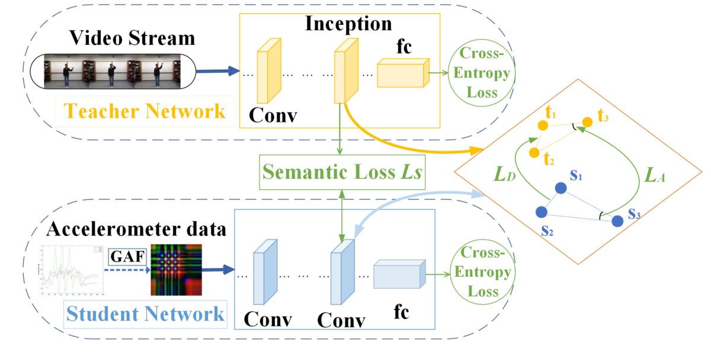
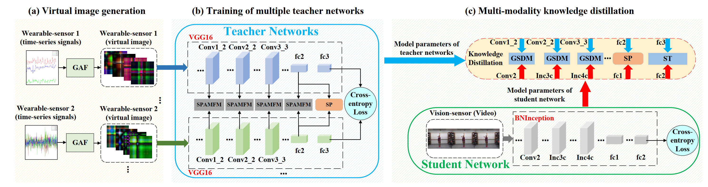
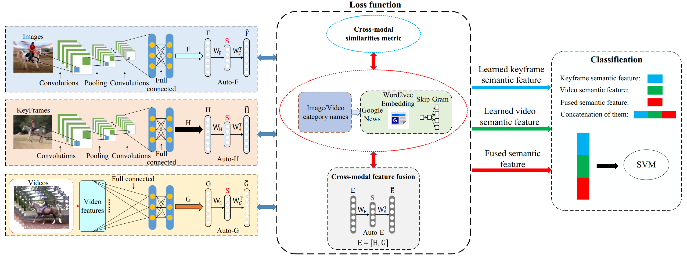
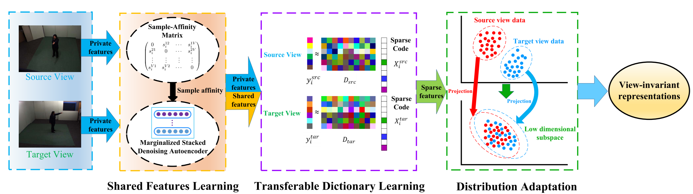
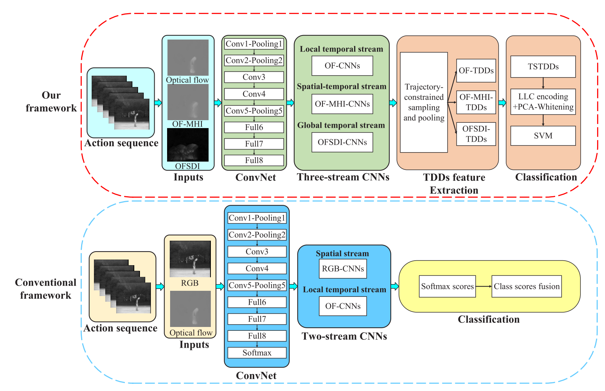
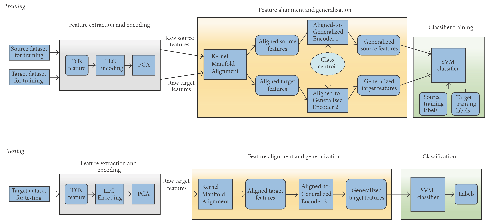
|
[Paper] [Code & Dataset] [BibTex] |


 Research topic: Causal Reasoning, Medical Report Generation
Research topic: Causal Reasoning, Medical Report Generation
IEEE Transactions on Pattern Analysis and Machine Intelligence (TPAMI), Major Revision, 2023. (JCR Rank 1, CCF-A, IF: 24.314)
|
[Paper] [Code & Dataset] [BibTex] |
Research topic: Causal Reasoning, Traffic Video Question Answering
Information Sciences (INS), Minor Revision, 2023. (JCR Rank 1, CCF-B, IF: 8.233)
|
[Paper] [Code & Dataset] [BibTex] |
Machine Intelligence Research (MIR), 2022. (Review Paper, 2022国际影响力TOP期刊，中国国际影响力优秀学术期刊)
|
[Paper] [Arxiv Version (Keep Updating)] [Github Page] [WeChat Official Account] [Tencent News] [BAAI Newsletter] [Sina Weibo] [MIR Official Website] [Twitter] [Facebook] [ScienceNet] [BibTex] |


 Research topic: Causal Reasoning, Spatial-temporal Representation Learning
Research topic: Causal Reasoning, Spatial-temporal Representation Learning
IEEE Transactions on Industrial Informatics (TII), 2023. (JCR Rank 1, CCF-C, IF: 11.648)
|
[Paper] [Code & Dataset] [BibTex] |


 Research topic: Spatial-temporal Anomaly Detection
Research topic: Spatial-temporal Anomaly Detection
IEEE Transactions on Image Processing (TIP), 2022. (JCR Rank 1, CCF-A, IF: 11.041)
|
[Paper] [Code & Dataset] [BibTex] |


 Research topic: Self-supervised Spatial-temporal Representation Learning
Research topic: Self-supervised Spatial-temporal Representation Learning
IEEE/CVF Conference on Computer Vision and Pattern Recognition (CVPR), Oral, 2022. (CCF-A)
|
[Paper] [Code & Dataset] [BibTex] |


 Research topic: Real-World Image Super-Resolution, Domain Adaptation
Research topic: Real-World Image Super-Resolution, Domain Adaptation
IEEE International Conference on Acoustics, Speech and Signal Processing (ICASSP), 2022. (CCF-B)
|
[Paper] [Code & Dataset] [BibTex] |
IEEE Transactions on Image Processing (TIP), 2021. (JCR Rank 1, CCF-A IF: 11.041)
|
[Paper] [Code & Dataset] [BibTex] |


 Research topic: Multi-modal Spatial-temporal Knowledge Transfer
Research topic: Multi-modal Spatial-temporal Knowledge Transfer
IEEE Transactions on Image Processing (TIP), 2020. (JCR Rank 1, CCF-A IF: 11.041)
|
[Paper] [Code & Dataset] [BibTex] |


Research topic: Multi-modal Spatial-temporal Knowledge Transfer
IEEE Transactions on Circuits and Systems for Video Technology (TCSVT), 2019. (JCR Rank 1, CCF-B, IF: 5.859)
|
[Paper] [Code & Dataset] [BibTex] |


 Research topic: Multi-view Spatial-temporal Knowledge Transfer
Research topic: Multi-view Spatial-temporal Knowledge Transfer
IEEE Signal Processing Letters (SPL), 2018. (JCR Rank 2, CCF-C, IF: 3.201)
|
[Paper] [Code & Dataset] [BibTex] |


 Research topic: Heterogenous Spatial-temporal Representation Learning
Research topic: Heterogenous Spatial-temporal Representation Learning
Complexity, 2018. (JCR Rank 4, IF: 2.121)
|
[Paper] [Code] [XD145 dataset] [BibTex] |


 Research topic: Heterogenous Spatial-temporal Knowledge Transfer
Research topic: Heterogenous Spatial-temporal Knowledge Transfer
PhD Dissertation
Academic services
-
Reviewer for Journals
- IEEE Transactions on Pattern Analysis and Machine Intelligence
- IEEE Transactions on Image Processing
- IEEE Transactions on Neural Networks and Learning Systems
- IEEE Transactions on Cybernetics
- IEEE Transactions on Multimedia
- IEEE Transactions on Circuits and Systems for Video Technology
- IEEE Transactions on Human-Machine Systems
- IEEE Signal Processing Letters
- IEEE Robotics and Automation Letters
- IET Computer Vision
- Pattern Recognition
- Pattern Recognition Letters
- Machine Vision and Applications
- Journal of Visual Communication and Image Representation
- Visual Computer
- IEEE Access
-
PC/Reviewer for Conferences
- IEEE/CVF Conference on Computer Vision and Pattern Recognition (CVPR)
- IEEE/CVF International Conference on Computer Vision (ICCV)
- European Conference on Computer Vision (ECCV)
- AAAI Conference on Artificial Intelligence (AAAI)
- IEEE International Conference on Acoustics, Speech and Signal Processing (ICASSP)
- Computational Visual Media Conference (CVM)
- Chinese Conference on Pattern Recognition and Computer Vision (PRCV)
- ACM international joint conference on pervasive and ubiquitous computing (UbiComp)
- IEEE International Semantic Web Conference (ISWC)
- IEEE International Symposium on Circuits and Systems (ISCAS)
- International AAAI Conference on Web and Social Media (ICWSM)
- CCF BigData Conference (CCF BigData)
-
Reviewer for Fundings
- National Natural Science Foundation of China (NSFC)